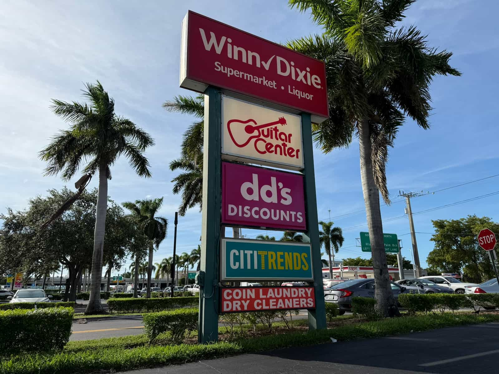

If you’re looking to increase the visibility of your business and improve the experience of your customers, the best way to do so is with pole signs by Machin Signs. The team at Machin Signs offers a variety of building signs that can be customized to fit your needs.
A pole sign (also called a pylon sign or high-rise sign) is a freestanding sign mounted on a tall pole. They are designed to be highly visible from a distance, making them ideal for attracting attention to businesses located near roadways.
The cost of a pole sign varies depending on factors like size, height, design complexity, illumination, and materials. Contact Machin Signs for a free quote tailored to your specific needs.
With proper maintenance, a well-made pole sign can last for 10-15 years or more.
Common materials include aluminum, steel, and acrylic. Machin Signs uses high-quality materials that are resistant to rust and corrosion, essential for Miami's coastal environment.
Height restrictions vary based on local regulations in Miami. Machin Signs is well-versed in local codes and can advise on the maximum allowable height for your location.
Yes, pole signs can be illuminated using various methods, such as internal lighting, external spotlights, or LED lights. Illuminated signs offer enhanced visibility, especially at night, which is crucial for gas stations operating 24/7.
Yes, pole signs are very effective at attracting attention and drawing customers to your business. They are particularly beneficial for businesses like gas stations that rely on attracting passing traffic.
Single-pole: The most common type, featuring a single pole supporting the sign.
Twin-pole: Uses two poles for added stability, often for larger signs.
Monopole: A single, sleek pole design.
Consider factors like your budget, location, branding, and desired visibility. Machin Signs can help you determine the best type of pole sign for your specific needs and location in Miami.
Absolutely! Pole signs can be customized to feature your logo, brand colors, and messaging.
Yes, permits are required for pole sign installation in Miami. Machin Signs handles the permitting process for you, ensuring compliance with local regulations.
Regular cleaning, inspections, and occasional maintenance (like replacing lights) will prolong the life of your sign. Machin Signs offers sign maintenance services to keep your investment in top condition.
It involves site preparation, foundation installation, pole erection, sign mounting, and electrical connections (if illuminated). Machin Signs has experienced installation teams to ensure a safe and efficient process.
Yes, pole signs are engineered to withstand Miami's wind conditions. They are designed to meet local wind load requirements and building codes.
The ideal size depends on factors like your location, distance from the road, and the amount of information you want to display. Machin Signs can help you determine the optimal size for maximum impact.
Choose colors that are consistent with your brand identity and offer high contrast for readability.
Bold, simple fonts are most effective for readability from a distance.
Yes, double-sided pole signs offer increased visibility from both directions of traffic.
Yes, you can include images or graphics on your pole sign.
Options include internal illumination, external spotlights, and LED lighting, which is energy-efficient and long-lasting.
Yes, Machin Signs can create custom-shaped pole signs to make your brand truly unique.
- Pylon signs
- High-rise signs
- Road signs (when referring to roadside business signs)
- Freestanding signs
- Billboard signs (though technically different, some people may use this term)
When properly engineered and installed, pole signs are safe and secure. Machin Signs adheres to strict safety standards during installation.
Regular maintenance and inspections can help prevent damage. Choosing durable materials and a reputable sign company like Machin Signs will also ensure a long-lasting sign.
Miami-Dade County has specific wind load requirements for signs, which Machin Signs is knowledgeable about and incorporates into their designs.
Miami has regulations regarding sign size, height, placement, and illumination. Machin Signs is familiar with these regulations and can guide you through the permitting process.
Pole sign installation is complex and requires specialized equipment and expertise. It's best to leave it to professionals like Machin Signs.
Contact Machin Signs for sign repair services. They can assess the damage and provide necessary repairs or replacements.
The foundation type depends on the size and height of the sign and the soil conditions. Machin Signs will ensure a proper foundation is installed for stability.
Pole signs for gas stations: Pole signs are essential for gas stations to attract drivers and communicate fuel prices, promotions, and branding.
Pole signs for restaurants: Help attract diners and advertise specials.
Pole signs for retail stores: Increase visibility and draw customers to your location.
Pole signs for car dealerships: Showcase your brand and attract potential car buyers.
Pole signs for hotels: Guide travelers and make your hotel easily visible from the highway.